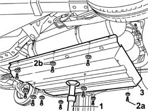

1042E60 CNG CANISTER ASSEMBLY SHIELD/PROTECTION / - R.R.
- Path
- Procedures > 10 ENGINE > 1042 (METHANE) CNG CANISTER AND PIPES > 1042E gas cannister brackets and protectors > 1042E60 CNG CANISTER ASSEMBLY SHIELD/PROTECTION / - R.R.
- Kind
- repair procedure (removal / refitting; the operation number is the code)
- Applies to
- all engines; all production periods; only with equipment: BIPOWER
- Interactive page
- https://sloeber94.github.io/elrnDB-fDbl/en/#/2584536
Applies to: all engines; all production periods; only with equipment: Cargo trim level and BIPOWER
 Removing
Removing
 Refitting
RefittingPlace the car on a lift.
1. Position a hydraulic support device under the cylinders guard.
2. Undo the fixing bolts (2a) and recover the washers (2b).
3. Lower the hydraulic device and remove the CNG cylinders guard.

Applies to: all engines; all production periods; only with equipment: Cargo trim level and BIPOWER
Refitting
RemovingPlace the CNG cylinders guard on the hydraulic support device.
Tighten the fixing bolts.
Tighten to torque all the bolts securing the cylinders unit guard.
 | Fastening | Component | Ø | Value (daNm) |
|---|---|---|---|---|
- | Bolt | CNG CANISTER SHIELD/PROTECTION / | M8 | 1 |
Remove the hydraulic support device.
Remove the car from the lift.
Topics that link to this page (10)
- 1042A70 Left CANISTER for CNG CANISTER ASSEMBLY - R.R.
- 1042A72 Centre CANISTER for CNG CANISTER ASSEMBLY - R.R.
- 1042A74 PIPE between FUEL TANK and fuel filler pipe - R.R.
- 1042B10 CNG supply PIPE from solenoid valve to pressure reduction unit - R.R.
- 1042E62 FRONT mounting BRACKET for CNG canister shield - R.R.
- 1042E64 CNG canisters LEFT mounting BRACKET - R.R.
- 1042E66 CNG canister shield RIGHT mounting BRACKET - R.R.
- 1040B34 intermediate fuel delivery hose r r
- 1080E58 INTERMEDIATE fuel vapour PIPE between fuel vapour SEPARATOR and ACTIVE CHARCOAL FILTER - R.R.
- 3380A30 handbrake cable - r+r